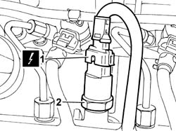
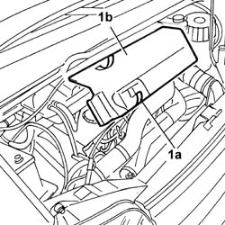
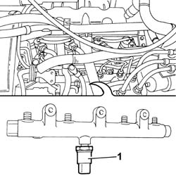

1060G28 FUEL PRESSURE SENSOR - R R
- Path
- Procedures > 10 ENGINE UNIT > 1060 DIESEL INJECTION SYSTEM > 1060G PRESSURE PUMP ELECTRIC CONTROL > 1060G28 FUEL PRESSURE SENSOR - R R
- Kind
- repair procedure (removal / refitting; the operation number is the code)
- Applies to
- engines: 2.0 JTD 8V, 2.3 JTD 16V, 2.8 JTD 8V; all production periods
- Interactive page
- https://sloeber94.github.io/elrnDB-fDct/en/#/244000849
Applies to: engines: 2.3 JTD 16V; all production periods
 Removing
Removing
 Refitting
Refitting- Disconnect the negative battery terminal.
1. Disconnect the electrical connection for the fuel pressure sensor.
 | Description | Connector |
|---|---|---|
1 | Fuel pressure sensor | K083 |
2. Undo the connector and remove the pressure sensor from the housing in the fuel manifold.

Applies to: engines: 2.3 JTD 16V; all production periods
Refitting
Removing- Fit the fuel pressure sensor in the special housing in the fuel manifold and tighten the fixing connector.
- Connect the electrical connection for the fuel pressure sensor.
| Description | Connector |
|---|---|---|
. | Fuel pressure sensor | K083 |
- Connect the negative battery terminal.
Applies to: engines: 2.8 JTD 8V; all production periods
Removing
RefittingSee in Op. 1048B22
See in Op. 1048B14
- Open the retaining springs (1a) and remove the inspection cover (1b).

Applies to: engines: 2.8 JTD 8V; all production periods
1. Disconnect the electrical connection for the sensor.
| Description | Connector |
|---|---|---|
1 | Fuel pressure sensor | K083 |
2. Undo the fuel pressure sensor and remove it.
Applies to: engines: 2.8 JTD 8V; all production periods
Refitting
Removing- Tighten the fuel pressure sensor on the fuel manifold.
- Connect the electrical connection.
| Description | Connector |
|---|---|---|
. | Fuel pressure sensor | K083 |
- Place the inspection cover in position and close the retaining springs.
See in Op. 1048B14
See in Op. 1048B22
Applies to: engines: 2.0 JTD 8V; all production periods
Removing
Refitting- Disconnect the negative battery terminal.
- Disconnect the engine oil vapour recovery pipe from the tappet cover.
- Disconnect the electrical connection for the sensor.
| Description | Connector |
|---|---|---|
. | Fuel pressure sensor | K083 |
1. Undo the pressure sensor from the fuel manifold and remove it.

Applies to: engines: 2.0 JTD 8V; all production periods
Refitting
Removing- Fit the pressure sensor on the fuel manifold.
- Connect the electrical connection.
| Description | Connector |
|---|---|---|
. | Fuel pressure sensor | K083 |
- Connect the engine oil vapour recovery pipe to the tappet cover.
- Connect the negative battery terminal.